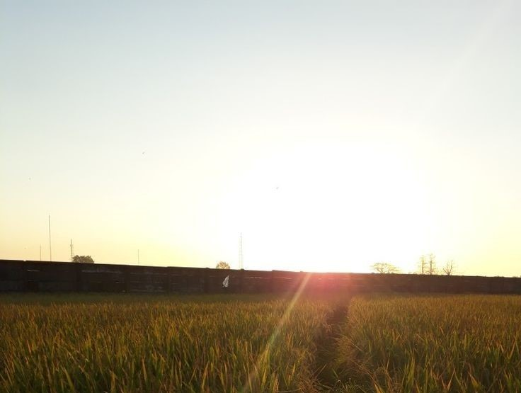
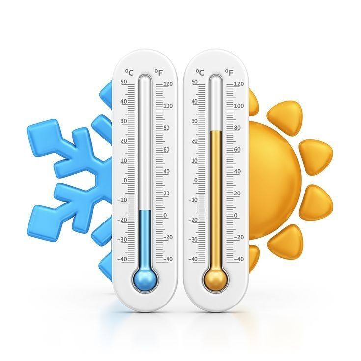
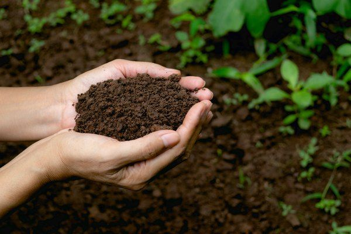

BAB 1. Makhluk Hidup dan Lingkungannya
Prolog
Lingkungan adalah segala sesuatu yang berada di sekitar objek individu. Komponen lingkungan terdiri atas komponen biotik (unsur organik) dan abiotik (unsur anorganik). Komponen lingkungan di luar individu merupakan susunan suatu sistem yang mempunyai hubungan timbal balik kompleks sebagai ekosistem. Berdasarkan UU No. 32 Tahun 2009 "Ekosistem adalah tatanan unsur lingkungan hidup yang merupakan kesatuan utuh- menyeluruh dan saling memengaruhi dalam membentuk keseimbangan stabilitas serta produktivitas lingkungan hidup" ilmu yang mempelajari tentang lingkungan serta hubungan antara makhluk hidup dengan lingkungan disebut ekologi. Keberadaan disiplin ilmu ekologi diharapkan mampu menjadi solusi terhadap adanya fenomena alam yang berkaitan dengan makhluk hidup dan lingkungan yang ditinggalinya.
A. Ciri-Ciri Makhluk Hidup
Pernahkah Anda mengamati tumbuhan dan sebongkah batu? Di antara keduanya, manakah yang termasuk dalam kategori makhluk hidup? Jika Anda amati lebih lanjut, tumbuhan memiliki beberapa ciri yang membuatnya termasuk ke dalam makhluk hidup. Sementara itu, batu merupakan benda mati yang tidak memiliki ciri-ciri tersebut. Contohnya, tumbuhan memiliki kemampuan mempertahankan dirinya dan dapat melestarikan spesiesnya melalui perkembangbiakan, sedangkan sebongkah batu tidak dapat melakukannya. Organisme yang memiliki ciri-ciri makhluk hidup, meliputi manusia, hewan, tumbuhan, dan mikroorganisme.
Ciri-ciri makhluk hidup meliputi bernapas, memerlukan makan/nutrisi, bergerak, peka terhadap rangsang, tumbuh dan berkembang, berkembang biak, mengeluarkan zat sisa, serta beradaptasi. Simak penjelasan berikut untuk mengetahui lebih lanjut mengenai ciri- ciri dari makhluk hidup yang membedakannya dengan benda mati.
1. Bernapas
Bernapas atau respirasi adalah proses menghirup oksigen (0,) yang ada di lingkungan dan mengembuskan gas buangan berupa karbon dioksida (CO,). Manusia bernapas karena membutuhkan oksigen untuk membakar zat makanan dan mengubahnya menjadi energi. Berikut sistem pernapasan pada manusia, hewan, dan tumbuhan.
- a. Sistem pernapasan pada manusia
- Manusia bernapas menggunakan organ pernapasan berupa paru-paru. Oksigen dihirup oleh paru-paru ketika tekanan udara di dalam paru-paru lebih rendah daripada tekanan udara di luar. Sementara itu, karbon dioksida dikeluarkan ketika tekanan udara di dalam paru-paru lebih tinggi daripada tekanan udara di luar. Berikut penjelasan organ-organ yang terlibat dalam sistem pernapasan pada manusia.
- Hidung, yaitu organ yang berfungsi sebagai saluran masuknya udara dari lingkungan ke dalam tubuh. Di dalam rongga hidung, terdapat selaput lendir dan rambut yang berfungsi menyaring dan menghangatkan udara yang masuk.
- Faring, yaitu organ yang terletak di belakang rongga hidung dan menjadi pembatas antara saluran pernapasan dan pencernaan.
- Laring, yaitu organ yang memiliki katup epiglotis yang berfungsi mengatur jalannya makanan dan udara agar sesuai pada salurannya
- Trakea, yaitu batang tenggorokan yang berbentuk tabung memanjang di sepanjang leher hingga masuk ke dada. Di sepanjang trakea, terdapat jaringan epitel bersilia yang berfungsi sebagai penghangat dan penyaring udara.
- Bronkus, yaitu cabang tenggorokan yang berfungsi mengalirkan udara dari trakea ke paru-paru, baik sebelah kanan maupun kiri.
- Bronkiolus, yaitu cabang yang lebih kecil dari bronkus.
- Alveolus, yaitu ujung dari dari bronkiolus. Alveolus merupakan tempat bertukarnya oksigen dan karbon dioksida
- Paru-paru, kelompok hewan yang bernapas menggunakan paru-paru, di antaranya anggota Kelas Mammalia, Aves, dan beberapa Amphibia Pada hewan Kelas Aves, selain menggunakan paru-paru, proses pernapasan juga berlangsung dengan bantuan kantong udara (air sacs) yang digunakan sebagai alat bantu pernapasan ketika terbang.
- Kulit, kelompok hewan yang bernapas menggunakan kulit, di antaranya hewan yang berada pada Kelas Annelida (cacing). Seluruh lapisan kulit cacing dipenuhi dengan pembuluh darah kapiler yang memungkinkan untuk menyerap oksigen di sekitarnya. Oksigen tersebut dialirkan ke seluruh tubuh dan dikeluarkan lagi melalui pembuluh darah kapiler berupa CO,. Beberapa Amphibia juga mampu bernapas menggunakan kulit, misalnya salamander. Kulit cacing dan salamander yang selalu basah memudahkan oksigen terserap dari lingkungan.
- Insang, kelompok hewan yang bernapas menggunakan insang di antaranya Kelas Pisces. Insang berfungsi menyaring oksigen di dalam air dan mengalirkannya ke seluruh tubuh.
- Trakea, kelompok hewan yang bernapas menggunakan trakea di antaranya hewan yang berada pada Kelas Insecta (serangga). Oksigen langsung diambil dari lingkungan melalui spirakel dan disalurkan ke seluruh tubuh tanpa diedarkan melalui darah.
- Stomata, yaitu organ tumbuhan yang biasa dikenal sebagai mulut daun karena terlihat seperti mulut yang dapat membuka dan menutup. Letak stomata ada di permukaan daun. Perhatikan Gambar 1.4, terlihat bahwa organ ini diapit oleh dua sel penjaga sebagai pengatur buka tutupnya stomata.
- Lentisel, yaitu lubang-lubang yang terletak pada bagian batang dan memiliki fungsi sama dengan stomata. Lentisel ini tersusun dari sel gabus yang dipisahkan oleh jaringan interseluler. Dengan adanya lentisel sebagai penyedia jalan, udara luar dapat melewati rapatnya lapisan gabus pada batang.
- Rambut akar, yaitu organ yang berfungsi menyerap air maupun nutrien dari dalam tanah. Namun, rambut akar juga berperan menyerap oksigen yang ada pada pori-pori tanah. Dengan demikian, rambut akar termasuk sebagai alat pernapasan pada tumbuhan.
- Karbohidrat, yaitu nutrisi yang merupakan sumber tenaga utama. Karbohidrat terdapat dalam makanan yang banyak mengandung zat tepung, seperti padi, umbi-umbian,jagung, gandum, dan sagu.
- Protein, yaitu nutrisi yang berfungsi sebagai zat pembangun dan struktural, misalnya untuk membentuk enzim pengatur kerja tubuh. Protein banyak terkandung pada telur, daging merah, ikan, dan biji-bijian.
- Lemak, yaitu nutrisi yang berfungsi:
- =>melarutkan vitamin A, D, E, dan K;
- =>menjaga fungsi hormon; serta
- =>menjaga keseimbangan gula darah.
- a. Gerak aktif, yaitu gerak yang terjadi karena otot-otot diperintahkan untuk bergerak. Contohnya, gerak pada manusia dan hewan saat berjalan, makan, dan aktivitas lainnya.
- b. Gerak pasif, yaitu gerak yang terjadi karena respons terhadap rangsangan umumnya terjadi pada tumbuhan. Adapun gerak pada tumbuhan, antara lain sebagai berikut.
- 1) Beranak (vivipar), misalnya kerbau, monyet, kucing, dan hewan berdaun telinga lainnya.
- 2) Bertelur (ovipar), misalnya pada hewan jenis unggas, reptil, ikan, dan serangga.
- 3) Bertelur-beranak (ovovivipar), misalnya pada ikan hiu, ikan pari, kuda laut, dan beberapa reptil
- ). Kawin (generatif), yaitu perkembangbiakan melalui proses penyerbukan pada serbuk sari dan putik bunga, lalu terbentuklah buah sebagai cadangan makanan dan biji sebagai alat perkembangbiakan.
- ). Tak kawin (vegetatif), yaitu perkembangbiakan yang tidak melalui proses pembuahan. Perkembangbiakan vegetatif dapat terjadi secara alami dan buatan. Contoh vegetatif alami adalah tunas, akar tinggal, rizom, spora, dan umbi lapis, sedangkan contoh vegetatif buatan, yaitu melalui teknik kultur jaringan, setek, dan cangkok.
- Adaptasi morfologi, yaitu penyesuaian bentuk dan struktur tubuh luar terhadap lingkungan untuk bertahan hidup di habitatnya. Contohnya, tumbuhan air memiliki daun lebih lebar agar dapat membantu proses penguapan menjadi lebih cepat. Hewan di Kutub Utara memiliki kulit dan rambut yang tebal agar dapat bertahan terhadap dingin
- Adaptasi fisiologi, yaitu penyesuaian fungsi alat tubuh untuk mempertahankan homeostasis terhadap lingkungan guna membantu proses metabolisme. Contohnya. manusia mengeluarkan keringat untuk membantu mengatur suhu tubuh serta membuang zat sisa
- Adaptasi tingkah laku, yaitu penyesuaian bentuk tingkah laku makhluk hidup terhadap lingkungan untuk menjaga kelangsungan hidupnya. Contohnya, kadal akan berjemur ketika udara panas.
- Menurut UU No. 32 Tahun 2009 tentang Pengelolaan Lingkungan Hidup. Pasal 1 Ayat (1), lingkungan hidup adalah kesatuan ruang dengan semua benda, daya, keadaan. dan makhluk hidup, termasuk manusia serta perilakunya yang memengaruhi alam, kelangsungan perikehidupan, dan kesejahteraan manusia serta makhluk hidup lainnya".
- Menurut Soegianto (2010), lingkungan adalah seluruh faktor luar yang memengaruhi suatu organisme berupa organisme hidup (faktor biotik) atau variabel yang tidak hidup (faktor abiotik). Lingkungan hidup dibedakan dalam tiga bagian, antara lain sebagai berikut.
- 1) Lingkungan fisik (physical environment), yaitu semua yang berada di lingkungan manusia berbentuk benda mati.
- 2) Lingkungan biologis (biological environment), yaitu semua yang berada di lingkungan manusia berupa organisme hidup lainnya.
- 3) Lingkungan sosial (social environment), yaitu manusia lain yang berada di sekitarnya. meliputi keluarga, tetangga, dan teman.
- Individu, yaitu sebuah satuan terkecil dari organisme. Contohnya, individu dalam sebuah ekosistem, yaitu seekor bebek, sebatang tumbuhan singkong, dan seekor katak. Seorang manusia juga dapat dikatakan sebagai individu
- Populasi, yaitu kumpulan individu yang hidup bersama pada waktu dan tempat yang sama. Jumiah populasi dapat berubah seiring waktu. Jika terdapat kelahiran atau imigrasi, jumlah populasi akan bertambah, sedangkan jika terjadi kematian atau emigrasi, jumlah populasi akan berkurang imigrasi merupakan perpindahan ke dalam, sedangkan emigrasi merupakan perpindahan keluar
- Komunitas yaitu semua populasi yang hidup bersama di suatu lingkungan dengan geografis dan waktu yang sama Populasi yang hidup dalam komunitas saling berinteraksi dan memengaruhi satu sama lain. Komunitas biotik terdiri atas manusia hewan, tumbuhan, dan mikroorganisme.
- Ekosistem, yaitu tatanan kesatuan komunitas secara menyeluruh yang saling berinteraksi. Anggota komunitas melakukan interaksi secara terus-menerus yang saling memengaruhi dengan komponen abiotik di tempat tersebut hingga membentuk suatu sistem. Contoh dari ekosistem alami, antara lain sungai, danau laut dan hutan. Sementara itu, ekosistem buatan di antaranya akuarium dan green house.
- Biosfer, yaitu lapisan kehidupan di permukaan bumi yang meliputi seluruh ekosistem daratan (terestrial) ataupun perairan (akuatik) Antarkomponen ekosistem tersebut terjadi interaksi dan saling membutuhkan untuk kelangsungan hidupnya
- 1). Sinar matahari

Sebagai pusat tata surya yang memancarkan sinarnya, matahari sangat bermanfaat bagi kelangsungan makhluk hidup di bumi dengan menghangatkan bumi hingga memungkinkan terjadinya kehidupan. Bagi tumbuhan, matahari berperan dalam proses fotosintesis untuk membuat makanan. Sementara itu, semua makhluk hidup secara langsung ataupun tidak langsung bergantung pada tumbuhan sebagai sumber makanan dan energi. Bagi manusia dan hewan, sinar matahari berperan dalam pembentukan tulang. Selain itu, teknologi panel sel surya saat ini sudah mampu mengubah energi matahari menjadi energi listrik untuk berbagai kepentingan, di antaranya kebutuhan listrik rumah tangga hingga mobil listrik tenaga surya. Bentuk bumi yang bulat mengakibatkan intensitas sinar matahari diterima oleh permukaan bumi tidak sama. Hal ini menyebabkan perbedaan iklim, cuaca, kelembapan udara, suhu, dan tekanan udara di setiap wilayah di bumi.
- 2). Suhu

Suhu memengaruhi segala aktivitas makhluk hidup. Pada umumnya, tumbuhan dan hewan dapat bertahan hidup antara suhu 0 °C hingga 45 °C. Sementara itu, beberapa makhluk hidup dapat bertahan hidup pada suhu ekstrem dengan beradaptasi. Contohnya, beruang kutub memiliki rambut yang tebal yang membantu menghangatkan tubuhnya. Beberapa burung terbang ke daerah beriklim hangat saat musim dingin untuk menghindari suhu dingin
- 3). Air

Air merupakan unsur yang sangat penting dalam kehidupan, meskipun bukan satu-satunya unsur yang diperlukan dalam kelangsungan hidup. Jumlah air di suatu tempat dipengaruhi oleh intensitas air hujan yang diterima selama setahun. Bagi manusia dan hewan, air berfungsi untuk memenuhi kebutuhan hidrasi tubuh, sedangkan bagi tumbuhan air berfungsi sebagai media pelarut unsur hara dan mineral agar dapat diserap oleh tumbuhan. Molekul utama air murni adalah H₂O, sedangkan kandungan mineral lain yang ikut terlarut di dalam air tergantung pada tanah, batuan, dan udara yang dilaluinya.
- 4). Udara
merupakan sejumlah gas yang membentuk atmosfer yang menyelimuti bumi. Udara berperan pada respirasi organisme dan fotosintesis tumbuhan. Manusia dan hewan menghirup udara untuk mendapatkan oksigen pada proses pernapasan dan mengeluarkan karbon dioksida ke lingkungan. Sebaliknya, pada proses fotosintesis tumbuhan menyerap karbon dioksida dan mengeluarkan oksigen ke lingkungan. Kandungan gas di atmosfer terdiri atas nitrogen, oksigen, argon, karbon dioksida, dan gas lainnya.
- 5). Tanah

Tanah merupakan penampakan daratan yang terbentuk dari proses alih rupa zat-zat mineral dan organik yang berlangsung sangat panjang di bawah pengaruh faktor-faktor lingkungan iklim, suhu, tekanan, dan organisme. Kandungan air dan mineral dalam tanah merupakan faktor esensial bagi kelangsungan hidup tumbuhan. Sementara itu, bagi manusia, tanah digunakan sebagai lahan permukiman, pertanian, perkantoran, dan perindustrian.
- b. Sistem pernapasan pada hewan
- Organ pernapasan pada hewan banyak ragamnya, di antaranya sebagai berikut.
- C. Sistem pernapasan pada tumbuhan
- pernapasan pada tumbuhan berbeda dengan manusia dan hewan. Pernapasan pada tumbuhan dilakukan pada alat-alat pernapasan sebagai berikut.
Beberapa jenis tumbuhan memiliki alat pernapasan lain yang dinamakan alat pernapasan khusus. Alat pernapasan tersebut terbentuk akibat tumbuhan yang beradaptasi dengan lingkungannya. Contohnya, akar gantung yang terdapat pada anggrek, akar napas yang terdapat pada bakau, dan rongga udara yang terdapat pada eceng gondok.
2. Memerlukan Makanan/Nutrisi
- Makhluk hidup memerlukan makanan sebagai input nutrisi yang diperlukan tubuh untuk memenuhi kebutuhan energi, meregenerasi sel-sel tubuh, memelihara jaringan, dan mempertahankan diri dari berbagai penyakit. Secara garis besar, makanan/nutrisi dikelompokkan menjadi makronutrien dan mikronutrien.
- Nutrisi makronutrien, yaitu nutrisi yang diperlukan dalam jumlah banyak. Contohnya adalah sebagai berikut.
3. Bergerak
- Semua makhluk hidup bergerak meskipun tidak harus berpindah tempat. Berdasarkan terjadinya, gerak dibedakan menjadi dua, yaitu sebagai berikut.
4. Peka terhadap Rangsangan
Peka terhadap rangsangan adalah kecenderungan makhluk hidup menanggapi rangsang dari luar, berupa sentuhan, cahaya, bau, rasa, dan rangsangan lainnya. Sebagai contoh, ketika Anda mencium bau asam dari buah-buahan, seketika air liur akan keluar. Contoh tersebut merupakan salah satu respons terhadap rangsangan berupa bau. Contoh lainnya adalah tumbuhan putri malu yang menguncupkan daunnya ketika disentuh. Hal ini membuktikan bahwa tumbuhan pun mampu merespons rangsangan dari luar. Lakukan Aktivitas Mandiri berikut untuk memahaminya lebih lanjut.
5. Tumbuh dan Berkembang
Semua makhluk hidup mengalami proses tumbuh dan berkembang. Pertumbuhan adalah perubahan ukuran, misalnya panjang, massa, dan volume. Pertumbuhan dapat diukur secara kuantitatif dan bersifat irreversible (tidak dapat kembali seperti semula). Sementara itu, perkembangan adalah proses menuju kedewasaan. Perkembangan hanya dapat diukur secara kualitatif.
6. Berkembang Biak
Semua makhluk hidup memiliki naluri untuk menghasilkan keturunan dengan tujuan menjaga kelestarian spesiesnya. Tujuan tersebut dilakukan melalui proses berkembang biak (bereproduksi). Makhluk hidup siap untuk berkembang biak ketika organ reproduksinya telah matang Berikut cara perkembangbiakan yang dilakukan hewan dan tumbuhan
- A. Cara perkembangbiakan hewan dibedakan menjadi tiga, yaitu sebagai berikut.
- B. Cara perkembangbiakan tumbuhan dibedakan menjadi dua, yaitu sebagai berikut.
7. Mengeluarkan Zat Sisa
Setiap makhluk hidup melakukan proses metabolisme dalam menjaga kelangsungan hidupnya. Dalam proses tersebut, akan terbentuk zat sisa yang harus dikeluarkan melalui proses pengeluaran zat sisa (ekskresi).
8. Beradaptasi
- Makhluk hidup memiliki kemampuan beradaptasi, yaitu kemampuan atau tindakan untuk menyesuaikan diri dengan lingkungannya, antara lain sebagai berikut.
B. Lingkungan Hidup
Lingkungan hidup adalah interaksi antara komponen biotik dan abiotik. Interaksi antarkomponen yang ada di lingkungan ini membentuk sebuah sistem yang dikenal sebagai ekosistem. Apabila interaksi tersebut mengalami hambatan, akan terjadi ketidakseimbangan yang berakibat pada gangguan ekosistem. Jadi, lingkungan hidup yang ada di sekitar Anda adalah ekosistem.
1. Definisi Lingkungan Hidup
- Berikut beberapa definisi dari lingkungan hidup.
2. Komponen Lngkungan Hidup
Komponen lingkungan hidup dikelompokkan menjadi dua bagian, yaitu sebagai berikut.
a. Komponen biotik
Komponen biotik adalah komponen dalam ekosistem yang mengacu pada makhluk hidup yang ada di bumi. Komponen ini dapat dikelompokkan berdasarkan tingkat organisasi dan peranannya.
Beberapa faktor biotik diciptakan Tuhan guna mendukung kehidupan, misalnya tumbuhan sebagai produsen, kemudian mendukung kehidupan organisme lainnya sebagai konsumen, serta bakteri dan jamur sebagai pengurai yang mengembalikan unsur pembentuk kehidupan ke alam menjadi faktor abiotik Siklus materi dan aliran energi di alam akan berlangsung secara seimbang dalam siklus kehidupan biosfer.
b. Komponen abiotik
Komponen abiotik adalah komponen fisik dan kimiawi yang dapat memengaruhi ketahanan makhluk hidup di sebuah lingkungan ekosistem tertentu. Komponen ini, di antaranya sinar matahari, suhu, air, udara, dan tanah.